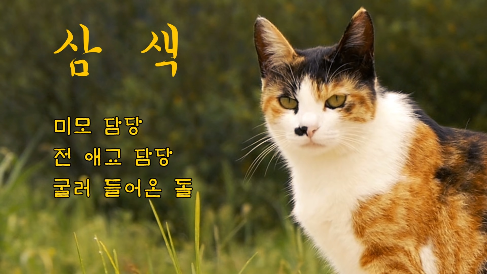
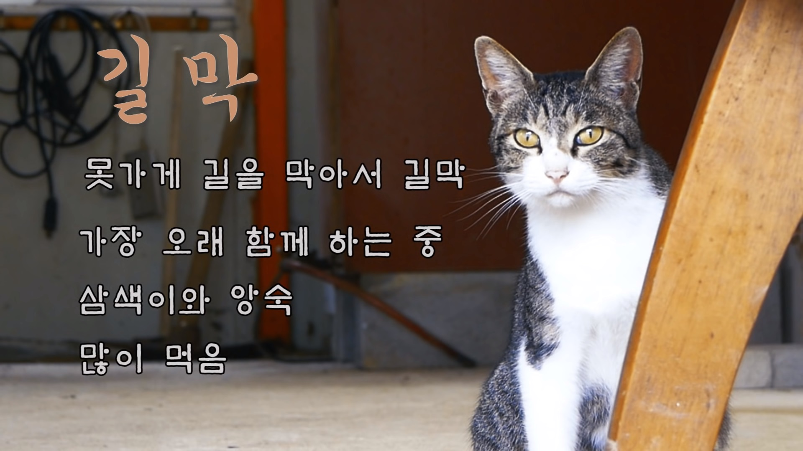
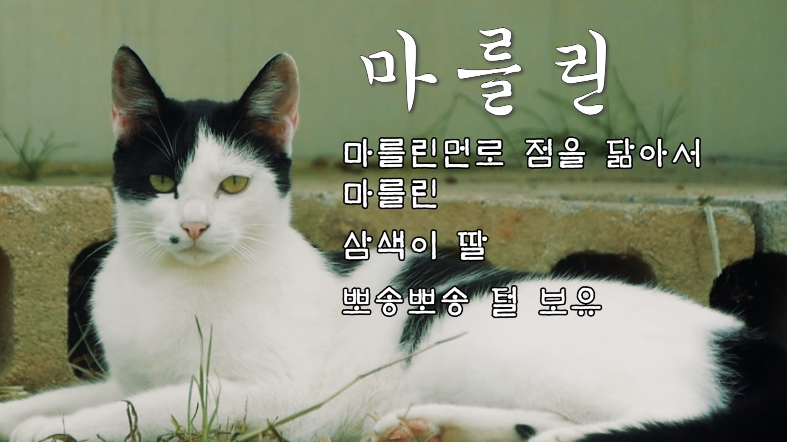
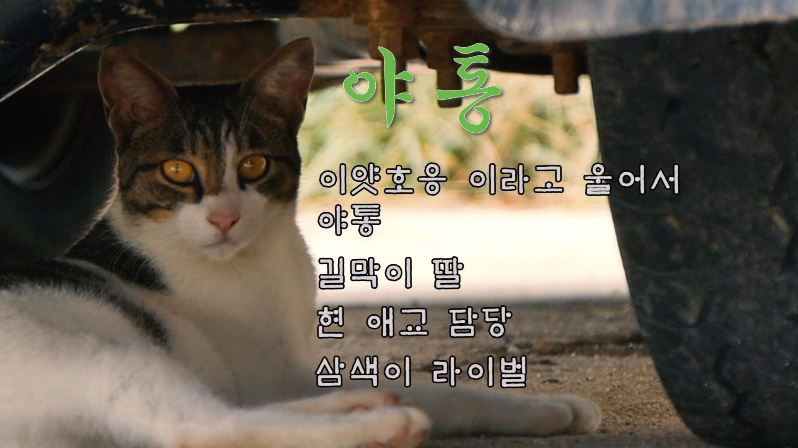
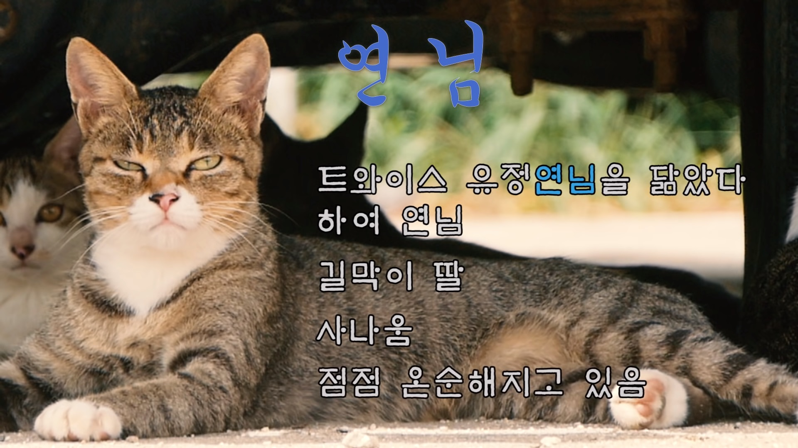
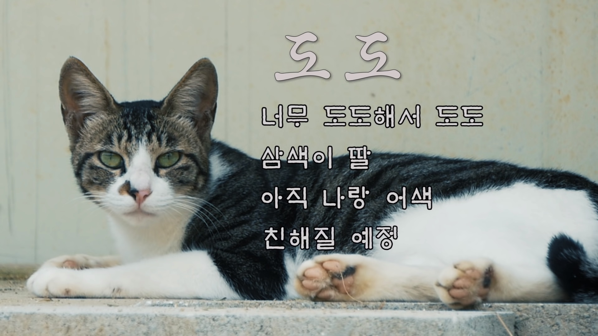

우선 2019년 기준 냥이들 목록입니다.
이 아이들 중 몇 아이들을 살펴보겠습니다.
2019.09.11 추가 업데이트
2019월 9월 4일haha ha님이 고양이들의 이름을 추가 공개했습니다.






정리해보자면,
| 삼색 | 길막 | 마를린 | 야통 | 연님 | 도도 |
| 미모담당 | 길막장인 | 마를린먼로 점 | 이얏호응 야통 | 트와이스 정연 | 너무도도 |
| 전 애교 담당 | 가장 오래된 아이 | 삼색이 딸 | 길막이 딸 | 길막이 딸 | 삼색이 딸 |
| 굴러 들어온 돌 | 삼색이와 앙숙 | 뽀송뽀송 털 보유 | 현 애교 담당 | 사나움 | 친해질 예정 |
| 많이먹음 | 삼색이 라이벌 | 점점 온순해지는 중 |
이 외에도 여러 고양이들과 댕댕이인 천하태평가족들과 여러 동물들이 있으니 하하하 채널 많이 찾아주세요^^